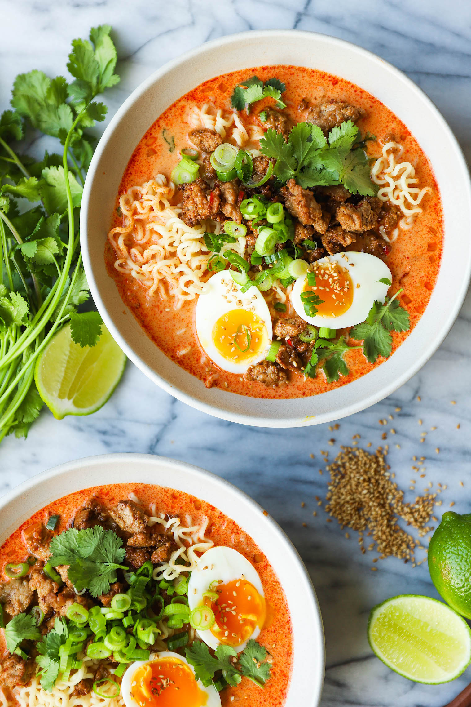

Thai Coconut Curry Ramen

Description
The most flavorful red curry coconut broth! Made in just 30 min with cilantro, soft boiled eggs and ramen noodles!
Ingredients
Broth
- 2 (3.5-ounce) packages instant ramen noodles
- 1 ½ tablespoons canola oil
- 2 medium shallots, diced
- 3 tablespoons red curry paste
- 2 cloves garlic, minced
- 1 tablespoon freshly grated ginger
- 1 (13.5-ounce) can coconut milk
- 4 cups chicken stock
Pork
- 2 teaspoons toasted sesame oil
- 1 pound ground pork
- 2 cloves garlic, minced
- 1 fresno chili, seeded and minced
- 2 tablespoons fish sauce
- Kosher salt and freshly ground black pepper, to taste
For Serving
- 4 soft boiled eggs, peeled and halved
- ½ cup fresh cilantro leaves
- 2 green onions, thinly sliced
- 1 tablespoon toasted sesame seeds
Instructions
- In a large pot of boiling water, cook noodles until just tender, about 2-3 minutes. Rinse under cold water and drain; set aside.
- Heat canola oil in a large stockpot or Dutch oven over medium heat. Add shallot, and cook, stirring frequently, until tender, about 3 minutes. Stir in curry paste, tomato paste, garlic and ginger until fragrant, about 2 minutes.
- Stir in coconut milk and chicken stock. Bring to a boil; reduce heat, cover and simmer until flavors have blended, about 8-10 minutes.
- Heat sesame oil in a large cast iron skillet over medium high heat. Add pork, garlic and fresno chili. Cook until pork has browned, about 3-5 minutes, making sure to crumble the pork as it cooks. Stir in fish sauce; season with salt and pepper, to taste.
- Divide noodles and broth into bowls. Top with pork, soft boiled eggs, cilantro, green onions and sesame seeds.